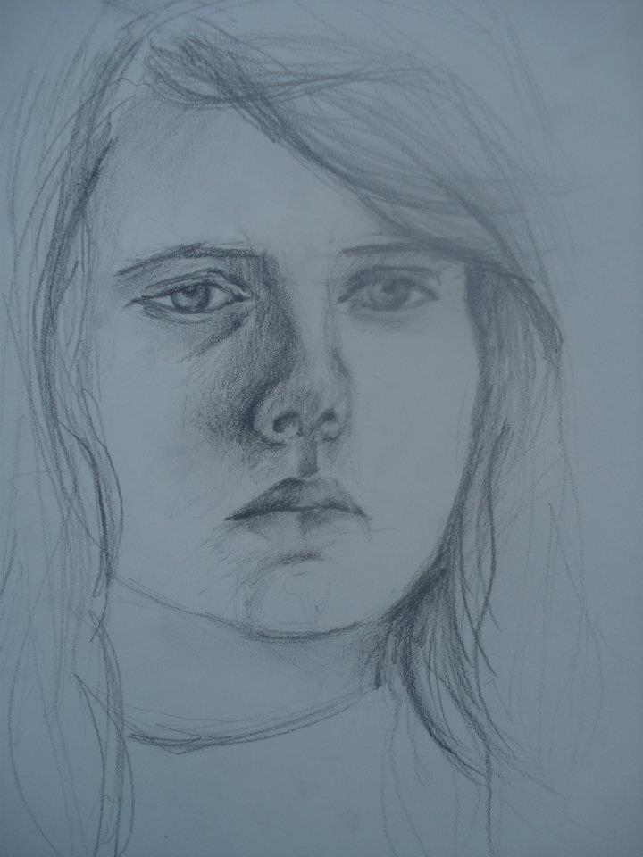
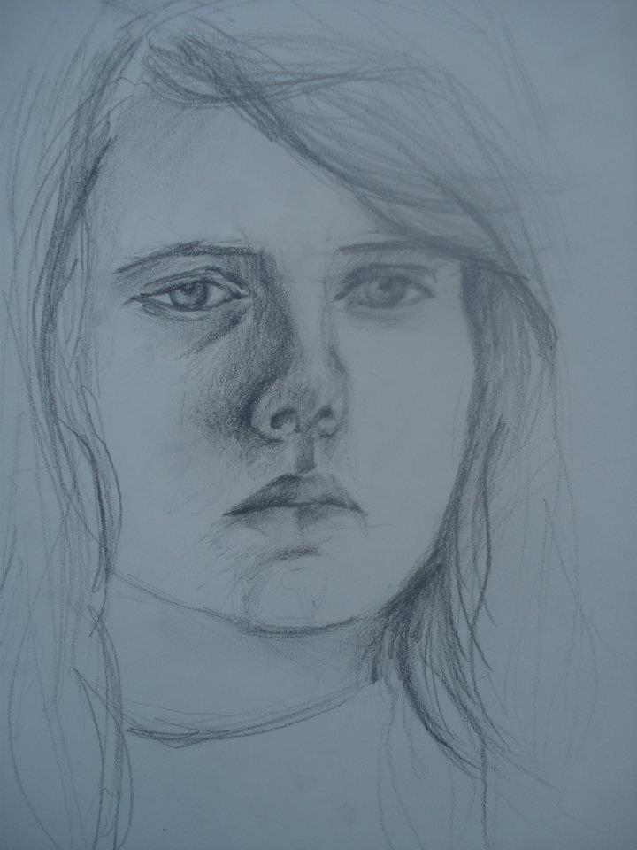

Tekeningen
Al van kleinsaf aan is tekenen mijn favoriete bezigheid. Hier zijn enkele voorbeelden waar ik focus op waarnemings- en modeltekenen. Ik werk met verschillende technieken waaronder potlood, stift, krijt, inkt, houtskool, ...
 
